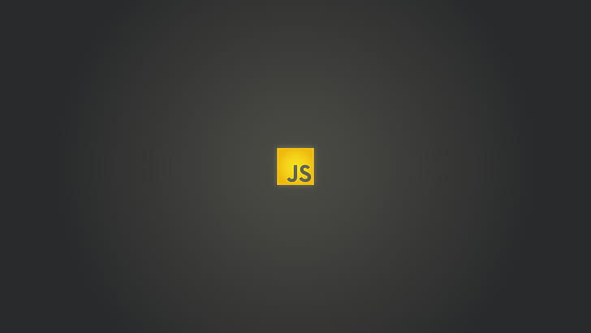

Hello I'm Renyel Jay Sioc from BSIT-NS-3A 21 years old, 3rdYear BSIT Student from TUP Taguig.
I'm from Central Bicutan, Taguig City, and I'm now pursuing a bachelor's degree in information technology. I enjoy playing online games like Mobile Legends and watching historical documentaries or, occasionally, motorcycle-related videos on YouTube.
The University I attend
The Technological University of the Philippines Taguig (TUP Taguig) is a public university located in the city of Taguig in Metro Manila, Philippines. It was established in 1977 and is one of the campuses of the Technological University of the Philippines (TUP) system.TUP Taguig offers undergraduate and graduate programs in various fields such as engineering, technology, business, education, and arts and sciences. The university is committed to providing quality education and aims to produce graduates who are globally competitive, innovative, and socially responsible.
Course I'm enrolled in

Bachelor of Science in Information Technology (BSIT) is an undergraduate degree program that focuses on the study of computer-based information systems and related technologies. The program prepares students for careers in various fields of IT such as software development, database administration, cybersecurity, network administration, and web development.
Hyper Text Markup Language(HTML)

HTML (Hypertext Markup Language) is a markup language used for creating the structure and content of web pages. It provides a set of tags and attributes that define the different elements of a web page such as headings, paragraphs, images, links, and forms. HTML is the backbone of every web page, and it is used to create the basic structure of a website.
Cascading Style Sheets (CSS)

CSS (Cascading Style Sheets) is a style sheet language used for styling and formatting the appearance of web pages. It provides a set of rules that control the visual presentation of HTML elements, such as fonts, colors, layouts, and animations. With CSS, web designers can create beautiful and responsive websites that are visually appealing and user-friendly.
Javascript

JavaScript is a high-level, dynamic programming language that is commonly used for creating interactive web pages and applications. It is a client-side scripting language, meaning that it is executed on the user's computer rather than on a web server.